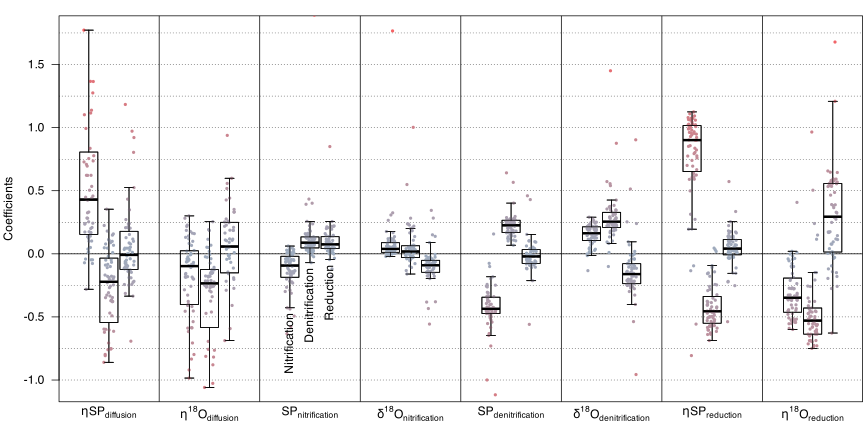
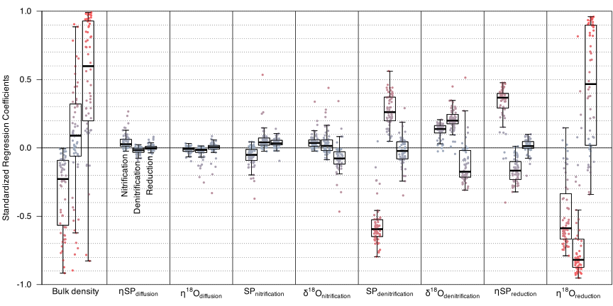
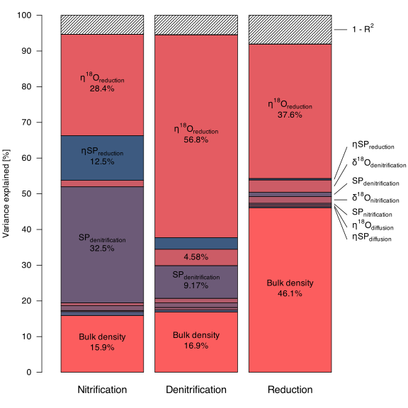

COLUMNS = 1:12
DEPTHS = PRE::getParameters()$depths
SAMPLESIZE = 300
SAMPLEREPEAT = 15
n <- SAMPLESIZE * length(COLUMNS) * length(DEPTHS)6 Sensitivity analysis
Sensitivity analysis is a method used to determine how different values of model parameters impact a particular model output value under a given set of assumptions (Trucano et al. 2006). Alternatively, this method is viewed as assessing a model’s sensitivity to its inputs rather than its parameters (Borgonovo and Plischke 2016).
In the context of the process rate estimator (PRE), the sensitivity analysis aims to quantify by how much the estimated process rates are affected by alterations to the least certain model parameters like isotope end members or bulk density. Since process rates are repeatedly estimated over time, the mean process rates over the entire time span are used for the sensitivity analysis. Any model inputs such as moisture, N2O, SP, and δ18O measurements on the other hand are taken for granted. It would be conceivable to extend the sensitivity analysis to encompass model input variables, additional model parameters or pre-processing variables, including physical parameters involved in pre-processing and the bandwidth parameter utilized for data smoothing, among others. However, such an extension would be extremely computationally expensive and was thus not performed.
By systematically varying key parameters, a sensitivity analysis helps in identifying which variables impact the outcome the most. Generally, sensitivity analyses are conducted in five steps:
- Defining the parameter distribution, ideally reflecting the uncertainty around each parameter.
- Sampling from the parameter space, i.e. from each parameter distribution.
- Calculating the model output of interest by running the model for each sampled set of parameters.
- Approximate the model output based on inputs with an emulator.
- Use the emulator to estimate parameter contributions to the output variance.
The first step is usually the hardest one, as it requires an extensive review of prior knowledge of the parameters. Global sensitivity analysis examines the allocation of output uncertainty in a model (whether numerical or not) to various input uncertainty sources. The term “global” is specifically used to distinguish it from the more commonly encountered local or one-factor-at-a-time analyses found in the literature, as highlighted by Saltelli (2004).
6.1 Defining the parameter distribution
The first step of the sensitivity analysis incorporates expressing the known uncertainty of each parameter as a distribution. The chosen distribution of the parameters is displayed in table 6.1. It is adopted from Yu et al. (2020), but in turn also based on research from Well and Flessa (2008), Decock and Six (2013), Lewicka-Szczebak et al. (2017) and Denk et al. (2017).
| Parameter | Value [‰] | Parameter uncertainty | |
|---|---|---|---|
BD |
Bulk density | 1.686 | \(\sim \mathcal{U} (\left\{1.59, 1.61, ..., 1.77, 1.79\right\})\) |
eta_SP_diffusion |
\(\eta\: \text{SP}_\text{diff.}\) | 1.55 | \(\sim \mathcal{N}(1.55, 0.28^2)\) |
eta_18O_diffusion |
\(\eta\ce{^{18}O}_\text{diff.}\) | -7.79 | \(\sim \mathcal{N}(-7.79, 0.27^2)\) |
SP_nitrification |
\(\text{SP}_\text{nit.}\) | 35 | \(\sim \mathcal{U}(32, 38.7)\) |
d18O_nitrification |
\(\delta\ce{^{18}O_\text{nit.}}\) | 23.5 | \(\sim \mathcal{N}(23.5, 3^2)\) |
SP_denitrification |
\(\text{SP}_\text{den.}\) | -4.85 | \(\sim \mathcal{U}(-13.6, 3.7)\) |
d18O_denitrification |
\(\delta\ce{^{18}O_\text{den.}}\) | 9.3 | \(\sim \mathcal{U}(2.5, 13.4)\) |
eta_SP_reduction |
\(\eta\:\text{SP}_\text{red.}\) | -5.9 | \(\sim \mathcal{U}(-8.2, -2.9)\) |
eta_18O_reduction |
\(\eta\ce{^{18}O_\text{red.}}\) | -15.4 | \(\sim \mathcal{U}(-25.1, -5.1)\) |
As noted in the table, parameters are either drawn from a Gaussian distribution specified by its mean and variance \(\mathcal N(\mu, \sigma^2)\) or from a uniform distribution specified by a lower and upper bound \(\mathcal U (a,b)\). There’s one exception to this: the bulk density is sampled from a predefined set of values. This procedure allowed to re-use the same prepared data (as described in chapter 3) for multiple parameter sets and thus made the sensitivity less computationally intensive.
6.2 Sampling from the parameter space
The next step of the sensitivity analysis involves sampling specific instances from the specified parameter space. This step, as well as the following ones, are performed by an R script. The script used to run the sensitivity analysis can be found in the respective GitHub repository. After successfully cloning the repository, the results of the sensitivity analysis can be reproduced simply by running the following command in the terminal.
Rscript scripts/sensitivity-analysis/01-sensitivitiy-analysis.RFor documentation purposes, some snippets of that script are highlighted in this section. The following code defines that the sensitivity analysis ought to be applied on all combinations of columns and depths. Here, we are choosing a sample size of 300, which means that for every distinct combination of depth and column, we will be sampling 300 sets of parameters.
To conduct the sensitivity analysis, a data frame with parameters sampled according to the distributions in Table 6.1 is created. We draw n parameter sets in total, where n is calculated based on the columns, depth layers and the SAMPLESIZE variable – in the script set to be 300. Note that in order to boost the sensitivity analysis, we only run the process rate estimator with 15 samples1 for the BB::multiStart solver for every day.
1 In the longPRE function from the package PRE, this number is passed via the argument n.
parameters <- data.frame(
expand.grid(repetition = 1:SAMPLESIZE,
column = COLUMNS,
depth = DEPTHS)[sample(1:n),-1],
BD = sort(rep(PRE::getParameters()$BD+seq(-0.1,0.1,l=11),l=n)),
eta_SP_diffusion = rnorm(n, 1.55, 0.28),
eta_18O_diffusion = rnorm(n, -7.79, 0.27),
SP_nitrification = runif(n, 32, 38.7),
d18O_nitrification = rnorm(n, 23.5, 3),
SP_denitrification = runif(n, -13.6, 3.7),
d18O_denitrification = runif(n, 2.5, 13.4),
eta_SP_reduction = runif(n,-8.2,-2.9),
eta_18O_reduction = runif(n,-25.1,-5.1)
)- 1
- Randomly re-order the variables for repetition, column and depth.
- 2
- Sort the generated parameter values for bulk density.
Note that the experimental parameter grid (containing information about column and depth layer) is shuffled randomly. We do this to prevent columns or depths to correlate with the bulk density (BD). The bulk density parameter needs to be sorted, since it’s not a parameter that’s passed to the PRE model, but rather one that is used to prepare the data used in the model. In order to reduce the number of times needed to prepare said data, we’ll sort BD and we’ll only update the data if BD changes.
6.3 Calculating the model output of interest
Next, we’ll loop over every row in the newly created parameters data frame. Each row contains a set of unique parameters to re-run the process rate estimator on. The results will be saved in a corresponding data frame – this constitutes the data to be analyzed for the sensitivity analysis.
results <- data.frame(Nitrification = rep(NA, n),
Denitrification = rep(NA, n),
Reduction = rep(NA, n))
BD <- 0
for (i in 1:n) {
if(!(parameters[i,"BD"]==BD)){
BD <- parameters[i,"BD"]
P <- getParameters(BD = BD)
data <- PRE::measurements |>
getN2ON(P) |>
getMissing() |>
calculateFluxes(P, FALSE)
}
x <- longPRE(data = data,
column = parameters[i,"column"],
depth = parameters[i,"depth"],
n = SAMPLEREPEAT,
parameters = do.call(PRE::getParameters,
as.list(parameters[i,-(1:3)])),
verbose = FALSE)
results[i,] <- x[["processes"]]
}- 1
-
Check if the bulk density value
BDhas changed since the last iteration. If not, there is no need to repeat the data preparation process. - 2
-
Use the
PRE::getParametersfunction to swap all relevant parameters for the process rate estimator with the current set of sampled parameters. - 3
-
Save the results
xin a table calledresults.
Note that running this entire script may take a few days as many resource intensive computations are repeated thousands of times.
6.4 Emulation of the model outputs
To conduct the sensitivity analysis, we now model the results based on the sampled parameters – so we treat the sampled parameters as independent variables \(\mathbf X\), and the computed mean process rates over time as dependent variables \(\mathbf Y\).
A commonly applied method of sensitivity analysis is Sobol’s method, which decomposes the total variance and assigns it to individual parameters specific interactions (Sobol’ 1990). However, Sobol’s method requires a large number of resampling, and is thus unfit for this application, because every model run is rather expensive. Instead, a linear regression model is used as an emulator. Often, this works fine enough because even though the response might not be linear overall, it can be approximated well enough by a linear model on a specific parameter interval.
First, we might look at the pairwise correlations between columns of \(\mathbf X\) and \(\mathbf Y\), i.e. all combinations of process rates as well as bulk density and isotope end members (Figure 6.1).

Figure 6.1 already reveals quite a lot, but in order to quantify the individual effects, it would be better to construct a multivariate linear regression model where we include all isotope end members at the same time.
\[\mathbf Y = \mathbf X \mathbf B + \mathbf U \tag{6.1}\]
For further analysis, we are interested in the coefficients \(\mathbf B\) of this multivariate linear model, not its predictions. Individual coefficients will be referred to as \(\beta_i\). Note that ever though an intercept \(\beta_0\) is included in these models, it is not interesting and thus will be excluded from further analyses.
A model as specified in Equation 6.1 is fit for every combination of depth and column separately. Thus, this leads to repeated coefficient estimates for each parameter (or variable, in this context).
6.5 Estimate parameter contributions to the output variance
In this section, the focus is on interpreting the raw coefficients \(\boldsymbol \beta\) derived from the set of linear regression models that were fit in the last section. These coefficients provide a numerical representation of the influence each parameter has on the process rate estimates.
Looking at the raw coefficients
Each coefficient \(\beta_i\) represents the change in the output variable for a one-unit change in the parameter, holding all other parameters constant. This allows us to directly assess the sensitivity of the model to changes in each specific parameter.
By reviewing the coefficients in table 6.2, we can identify which parameters are more influential and may thus deserve further attention to reduce uncertainty in the process rate estimator.
| Nitrification | Denitrification | Reduction | |
|---|---|---|---|
| Bulk density | -21 ± 31 | 2.3 ± 40 | 45 ± 65 |
| \(\eta\;\text{SP}_{\text{diffusion}}\) | 0.74 ± 1.2 | -0.35 ± 0.61 | 0.055 ± 0.54 |
| \(\eta^{18}\text{O}_\text{diffusion}\) | -0.25 ± 0.61 | -0.65 ± 1.2 | -0.088 ± 1.1 |
| \(\text{SP}_\text{nitrification}\) | -0.17 ± 0.4 | 0.13 ± 0.25 | 0.094 ± 0.13 |
| \(\delta\;^18\text{O}_\text{nitrification}\) | 0.089 ± 0.23 | 0.056 ± 0.17 | -0.12 ± 0.26 |
| \(\text{SP}_\text{denitrification}\) | -0.42 ± 0.18 | 0.23 ± 0.094 | -0.014 ± 0.13 |
| \(\delta\;^18\text{O}_\text{denitrification}\) | 0.15 ± 0.085 | 0.29 ± 0.21 | -0.14 ± 0.23 |
| \(\eta\;\text{SP}_{\text{reduction}}\) | 0.76 ± 0.39 | -0.42 ± 0.18 | 0.016 ± 0.26 |
| \(\eta^{18}\text{O}_\text{reduction}\) | -0.31 ± 0.2 | -0.47 ± 0.33 | 0.29 ± 0.37 |
| adjusted R2 | 0.95 ± 0.043 | 0.94 ± 0.057 | 0.92 ± 0.091 |
When interpreting the raw coefficients \(\boldsymbol \beta\) in the regression models used in the sensitivity analysis, it’s important to note that these coefficients reflect the effect size of each parameter at a fixed value, assuming other parameters are held constant. However, these coefficients do not take into account the prior uncertainty associated with each parameter listed in table 6.1.

BD) was omitted from this graph because its unit and hence its parameter’s magnitude differs from the istope end members. The mangitude of the coefficients can be interpreted as the effect size said parameter would have without considering its uncertainty.
This means that while a coefficient can indicate how much the output will change with a one-unit change in the parameter, it doesn’t take into account the uncertainty of the parameter itself, which is also a driver of the overall contribution to the model sensitivity. In order to consider the actual contribution of parameters to the model outcome variability, looking at the standardized regression coefficient is more appropriate.
Standardized regression coefficients
The standardized regression coefficient (SRC, \(\beta^\ast\)), often referred to as beta coefficient in statistical models, measures the strength and direction of the relationship between an independent variable and the dependent variable in a regression model, with all variables being standardized. The SRC can be calculated as:
\[\beta^\ast_i = \frac{\sigma_{x_i}}{\sigma_y} \beta_i \tag{6.2}\]
where \(\beta_i\) is the estimated coefficient of a predictor \(x_i\) in a linear model, \(\sigma_{x_i}\) is the predictor’s standard deviation, while \(\sigma_{y}\) is the response’s standard deviation. A consequence of standardizing the coefficients is that they all fall into the range between -1 and 1.
The key advantage of using standardized regression coefficients is that it allows for direct comparison of the relative importance or impact of each independent variable on the dependent variable across different studies or models, even when the variables are measured on different scales. This enables a clearer understanding of which variables have the most significant influence on the outcome, making it a useful tool for a sensitivity analysis. Now, the value assigned to each parameter represents its relative importance (Table 6.3).
| Nitrification | Denitrification | Reduction | ||||
|---|---|---|---|---|---|---|
| Bulk density | -0.31 ± 0.27 | (12%) | 0.064 ± 0.41 | (0.64%) | 0.51 ± 0.44 | (50%) |
| \(\eta\;\text{SP}_{\text{diffusion}}\) | 0.048 ± 0.056 | (0.28%) | -0.023 ± 0.031 | (0.079%) | 0.0026 ± 0.026 | (0.0012%) |
| \(\eta^{18}\text{O}_\text{diffusion}\) | -0.013 ± 0.024 | (0.02%) | -0.033 ± 0.052 | (0.17%) | -0.0045 ± 0.061 | (0.0038%) |
| \(\text{SP}_\text{nitrification}\) | -0.062 ± 0.077 | (0.47%) | 0.06 ± 0.08 | (0.55%) | 0.037 ± 0.034 | (0.26%) |
| \(\delta\;^18\text{O}_\text{nitrification}\) | 0.047 ± 0.057 | (0.26%) | 0.035 ± 0.091 | (0.19%) | -0.075 ± 0.11 | (1.1%) |
| \(\text{SP}_\text{denitrification}\) | -0.57 ± 0.15 | (39%) | 0.27 ± 0.11 | (12%) | -0.023 ± 0.1 | (0.1%) |
| \(\delta\;^18\text{O}_\text{denitrification}\) | 0.12 ± 0.057 | (1.9%) | 0.2 ± 0.082 | (6.5%) | -0.12 ± 0.14 | (2.6%) |
| \(\eta\;\text{SP}_{\text{reduction}}\) | 0.32 ± 0.16 | (12%) | -0.16 ± 0.086 | (4.2%) | 0.014 ± 0.052 | (0.039%) |
| \(\eta^{18}\text{O}_\text{reduction}\) | -0.48 ± 0.25 | (28%) | -0.67 ± 0.36 | (71%) | 0.45 ± 0.43 | (38%) |
| adjusted R2 | 0.95 ± 0.043 | 0.94 ± 0.057 | 0.92 ± 0.091 |
Standardizing the coefficients changes the results seen in table 6.2 and figure 6.2. Note that the coefficients of column, depth and their interactions are excluded from this table, even though they are more explanatory than the isotope end members.

The interpretation of standard regression coefficients is not quite straightforward – remember; standard deviations are not cumulative, only variance is. So, to indicate proportional share of explained variance, the squared SRC would need to be compared.
Variance decomposition
Squaring the standardized regression coefficient is related to the variance decomposition performed by the analysis of variance (ANOVA), which was developed and formally described by Ronald A. Fisher (Fisher 1926, Fisher 1935). In the absence of multicollinearity, the expected values of both the ANOVA relative sum of squares and the squared SRC are the same (Novak 2015). However, the ANOVA has the nice property that the assigned variance explained matches the overall goodness of fit (R2) of the models perfectly. Thus, the final variance decomposition is computed from a classical multi-way ANOVA.

The results shown in figure 6.4 allow us to assign percentage-wise contributions to the variance explained to the individual parameters inspected during the sensitivity analysis. Averaged over all processes, \(\eta\ce{^{18}O_\text{reduction}}\) contributes most to the variance in the processes (40.9%), followed by the bulk density (26.3%) and \(\text{SP}_\text{denitrification}\) (14.3%). All other parameters combined only explain little variance (12.2%). Also, on average, 6.3% of the variance is left unexplained by the linear models.
The source of the unexplained variance in figure 6.4 may be attributed to one of two sources: either it stems from the variance of the process rate estimate themselves, or from a non-linear response of the mean process rate estimates to changes in the parameters. The results in table 6.4 seem to suggest that at least some of the variance (between 0.46% and 1.04% percentage points, as SAMPLEREPEAT = 15 was used for the sensitivity analysis) stems from the inherent uncertainty of the process rate estimator itself. That would translate to little more than 10% of the unexplained variance as it is determined by the analysis of variance. This share could be further reduced by using a larger SAMPLEREPEAT number, but according to the law of large numbers, the computational cost to do so would increase quadratically.
SAMPLEREPEAT parameter in the longPRE function on the mean, standard deviation, and coefficient of variation for mean nitrification, denitrification, and reduction processes.
SAMPLEREPEAT |
Metric | Nitrification | Denitrification | Reduction |
|---|---|---|---|---|
5 |
Mean Standard deviation Coefficient of variation |
13.784 0.129 0.94% |
14.172 0.198 1.40% |
26.633 0.584 2.19% |
15 |
Mean Standard deviation Coefficient of variation |
13.818 0.063 0.46% |
14.234 0.094 0.66% |
26.821 0.279 1.04% |
Not every parameter explains the variance in the process rate estimates equally well for different processes. For example, the variance in the estimated reduction rates are reasonably well explained (83.7%) only by bulk density and \(\eta\ce{^{18}O_\text{reduction}}\) alone. Bulk density seems much less capable in explaining the variance in the estimated nitrification and denitrification rates, on the other hand. For these two processes, \(\text{SP}_\text{denitrification}\) and \(\eta\ce{^{18}O_\text{reduction}}\) seem to be the more driving factors.